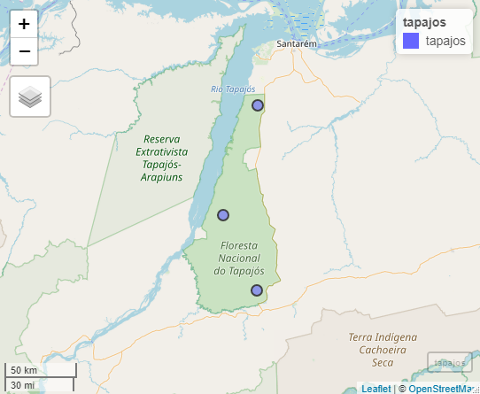

Introduction to chirps
Kauê de Sousa
Department of Agricultural Sciences, Inland Norway University, Hamar, Norway; Bioversity International, Rome, ItalyAdam H. Sparks
Centre for Crop Health, University of Southern Queensland, Toowoomba, AustraliaWilliam Ashmall
Universities Space Research Association, NASA, Huntsville, USAJacob van Etten
Bioversity International, Rome, ItalySvein Ø. Solberg
Department of Agricultural Sciences, Inland Norway University, Hamar, NorwaySource:
vignettes/Overview.Rmd
Overview.RmdSummary
The chirps package provides functionalities for reproducible analysis using the CHIRPS data1. CHIRPS is a daily precipitation data set developed by the Climate Hazards Group1 for high resolution precipitation gridded data. Spanning 50\(^{\circ}\)S-50\(^{\circ}\)N (and all longitudes) and ranging from 1981 to near-present (normally with a 45 day lag), CHIRPS incorporates 0.05 arc-degree resolution satellite imagery, and in-situ station data to create gridded precipitation time series for trend analysis and seasonal drought monitoring1. Other functionalities of chirps are the computation of precipitation indices and the evaporative stress index (ESI) which describes temporal anomalies in evapotranspiration produced weekly at 0.25 arc-degree resolution for the entire globe.
Usage
The Tapajós National Forest is a protected area in the Brazilian Amazon. Located within the coordinates -55.4\(^{\circ}\) and -54.8\(^{\circ}\) E and -4.1\(^{\circ}\) and -2.7\(^{\circ}\) S with ~ 527,400 ha of multiple Amazonian ecosystems. We take three random points across its area to get the precipitation from Jan-2013 to Dec-2018 using get_chirps.sf() for objects of class ‘sf’.2

library("chirps") library("sf") example("tapajos", package = "chirps") dt <- get_chirps(tp_point, dates = c("2013-01-01","2018-12-31"))
The function get_chirps() returns a data.frame which inherits the classes ‘chirps’ and ‘chirps_df’, where each id represents the index for the rows in the in-putted ‘object’.
dt #> id lon lat date chirps #> <int> <dbl> <dbl> <date> <dbl> #> 1: 1 -55.03 -3.80 2013-01-01 0.00 #> 2: 1 -55.03 -3.80 2013-01-02 12.05 #> 3: 1 -55.03 -3.80 2013-01-03 24.11 #> 4: 1 -55.03 -3.80 2013-01-04 0.00 #> 5: 1 -55.03 -3.80 2013-01-05 0.00 #> --- #> 6569: 3 -55.03 -3.41 2018-12-27 0.00 #> 6570: 3 -55.03 -3.41 2018-12-28 0.00 #> 6571: 3 -55.03 -3.41 2018-12-29 0.00 #> 6572: 3 -55.03 -3.41 2018-12-30 0.00 #> 6573: 3 -55.03 -3.41 2018-12-31 0.00
With precip_indices() is possible to assess how the precipitation changes across a time series using precipitation variability indices3. Here, we take the indices for intervals of 15 days and compute the indices for the time series (from Jan-2013 to Dec-2018).
p_ind <- precip_indices(dt, timeseries = TRUE, intervals = 15) p_ind #> id date lon lat index value #> <int> <date> <dbl> <dbl> <chr> <dbl> #> 1: 1 2013-01-01 -55.03 -3.80 MLDS 7.00 #> 2: 1 2013-01-01 -55.03 -3.80 MLWS 2.00 #> 3: 1 2013-01-01 -55.03 -3.80 R10mm 1.00 #> 4: 1 2013-01-01 -55.03 -3.80 R20mm 3.00 #> 5: 1 2013-01-01 -55.03 -3.80 Rx1day 47.37 #> --- #> 3446: 3 2018-12-16 -55.03 -3.41 Rx5day 53.90 #> 3447: 3 2018-12-16 -55.03 -3.41 R95p 34.53 #> 3448: 3 2018-12-16 -55.03 -3.41 R99p 34.53 #> 3449: 3 2018-12-16 -55.03 -3.41 Rtotal 80.49 #> 3450: 3 2018-12-16 -55.03 -3.41 SDII 13.42
The function precip_indices() returns a data.frame with the precipitation indices. Each date corresponds to the first day in the time series intervals as defined by the argument ‘intervals’. When timeseries = FALSE the function returns a single precipitation index for the entire time series.
There are two main types of indices. Those that are expressed in days (“MLDS”, “MLWS”, “R10mm”, “R20mm”) and those that are expressed in mm (“R95p”, “R99p”, “Rx5day”, “SDII”). We split these indices to visualise the time series.
library("tidyverse") mm <- c("R95p","R99p","Rx5day","Rtotal") days <- c("MLDS","MLWS","R10mm","R20mm") p_ind %>% filter(index %in% mm) %>% group_by(index) %>% mutate(ab = mean(value)) %>% ggplot() + geom_line(aes(x = date, y = value, group = id)) + geom_hline(aes(yintercept = ab), colour = "red", lwd = 0.7) + geom_smooth(aes(x = date, y = value), method = "loess") + facet_wrap(. ~ index) + labs(x = "Year", y = "Index (mm)") + theme_classic()

Now plot the indices expressed in days.
p_ind %>% filter(index %in% days) %>% group_by(index) %>% mutate(ab = mean(value)) %>% ggplot() + geom_line(aes(x = date, y = value, group = id)) + geom_hline(aes(yintercept = ab), colour = "red", lwd = 0.7) + geom_smooth(aes(x = date, y = value), method = "loess") + facet_wrap(. ~ index) + labs(x = "Year", y = "Index (days)") + theme_classic() #> `geom_smooth()` using formula 'y ~ x'

Here we see how these indices are changing across the time series. In this quick assessment, it is possible to see that the maximum precipitation in consecutive 5-days (Rx5day) is higher in the first weeks of each year, which agree with the beginning of the rainy season in this region. However, the trend shows a decreasing in Rx5day across the years. In the other chart we note an increasing extent of consecutive dry days (MLDS) across the time series, with also a decrease in the number of consecutive rainy days (MLWS).
Going further
Evapotranspiration
The chirps package also retrieves the Evaporative Stress Index (ESI) using the function get_esi() which behaves similarly as get_chirps().
The function get_esi() may return NAs due to cloudiness in the dataset. Which will return an error message:
set.seed(123) lonlat <- data.frame(lon = runif(1, -55, -54), lat = runif(1, -3, -2.7)) get_esi(lonlat, c("2017-12-01","2018-01-20"))
One way to deal with this is increase the buffer area around the in-putted object with the argument dist passed to st_buffer() from sf through the ... functionality in get_esi(). The argument nQuadSegs defines the number of segments per quadrant in the buffer.
Objects of class sf
To return an object with the same class (sf), the argument as.sf = TRUE is used.
get_chirps(tapajos, dates = c("2017-12-15","2017-12-31"), as.sf = TRUE)
Objects of class geojson
get_chirps() and get_esi() also contains a method for objects of class geojson with geometries ‘Point’ and ‘Polygon’. To return an object with the same class (geojson), the argument as.geojson = TRUE is used.
Limitations
While chirps provides an API for reproducible analysis using CHIRPS data in R its functionalities has some limitations. The main limitation, is that the API provider ClimateSERV requires each location point to be requested individually. Let’s say that you have 1000 points, to give you the data from your request chirps will send the call to the API provider 1000x, which may increase the time required to get the data in your R section. Before sending you request be aware that it can take several minutes for requests for a large timeseries (> 10 years) and large geographic coverage (global scale).
References
1. Funk, C., Peterson, P., Landsfeld, M. & Pedreros, D. et al. The climate hazards infrared precipitation with stations—a new environmental record for monitoring extremes. Scientific Data 2, 150066 (2015).
2. Pebesma, E. Simple Features for R: Standardized Support for Spatial Vector Data. The R Journal 10, 439–446 (2018).
3. Aguilar, E., Peterson, T. C., Obando, P. R. & Frutos, R. et al. Changes in precipitation and temperature extremes in Central America and northern South America, 1961–2003. Journal of Geophysical Research 110, D23107 (2005).